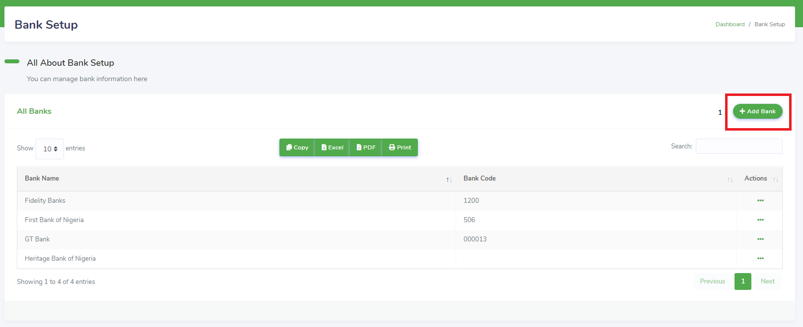
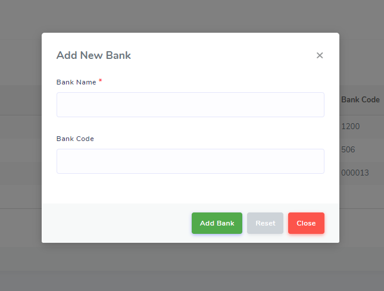
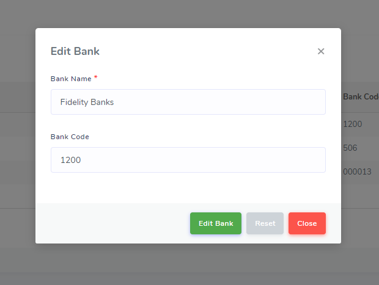

Bank Setup
Bank setup (Figure 20) is used to store bank information including the bank name and bank code on the IH system. Each employee is stored with their corresponding bank information which is used to manage the employee’s payroll and pay order reports.
Figure 20: IH AP Bank Setup

To add a new bank information:
Action: Click on the Add Bank (1) button to bring up the Add New Bank modal dialogue (Figure 21)
Figure 21: IH AP Add New Bank

Fill in the fields and click Add Bank to store the bank information in the IH system.
To edit bank information:
Action: Click on Actions (see Row Actions Working with Tables) for the corresponding bank in the All Banks table to display the list of actions. Click on Edit Bank to bring up the Edit Bank modal dialogue (Figure 22).
Figure 22: IH AP Edit Bank

Modify the desired field and click Edit Bank to update the bank information in the IH system.
Note: On first use, the table in the bank setup view, like the tables in other subtask views in the AP HR Config, is empty. Any additions users make are saved and available throughout the IH AP.